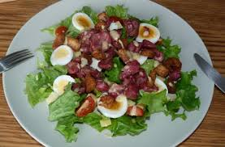

La salades de gesiers confit
Les Ingredients
- 150 g de gésier de volaille
- 4 pommes de terre
- 1 oignon
- 1 échalote
- 1 salade verte
- Des croutons
Preparation
| Temps total |
35 min |
| Preparation |
15 min |
| Cuisson |
20 min |
- Epluchez vos pommes de terre et faites-les bouillir. Pendant ce temps, émincez finement l'oignon
et l'échalote, que vous faites ensuite revenir à la poêle avec une cuillère d'huile d'olive.
- Une fois les pommes de terre cuites, coupez-les soit en lamelles, soit en dés. Faits-les
elles aussi dorer dans la poêle pour qu'elles soient croustillantes.
- Préparez votre salade verte : lavez et rincez-la, puis séparez en les feuilles que
vous déposerez en lit sur vos 2 assiettes. Arrosez-les alors de vinaigre balsamique.
- Ajoutez vos petites pommes de terre dessus, puis les gésiers (que vous aurez réchauffés
au bain-marie ou dans la poêle).

- Il ne reste plus que la petite touche finale: les p'tits croûtons pour que ça croque sous la dent...
Retour au Menus